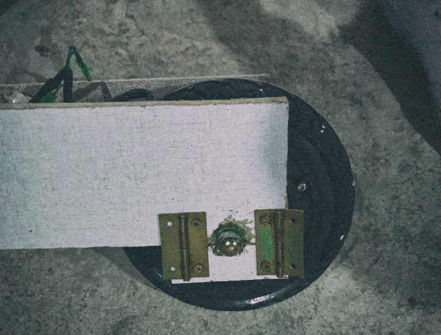
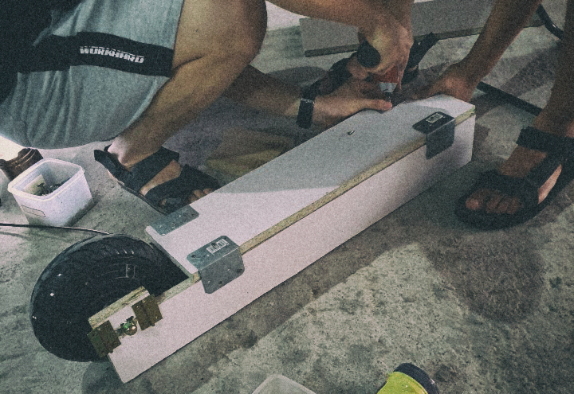
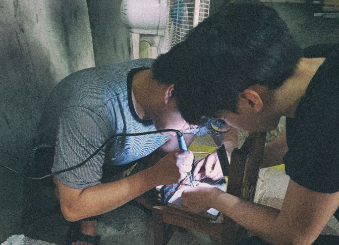
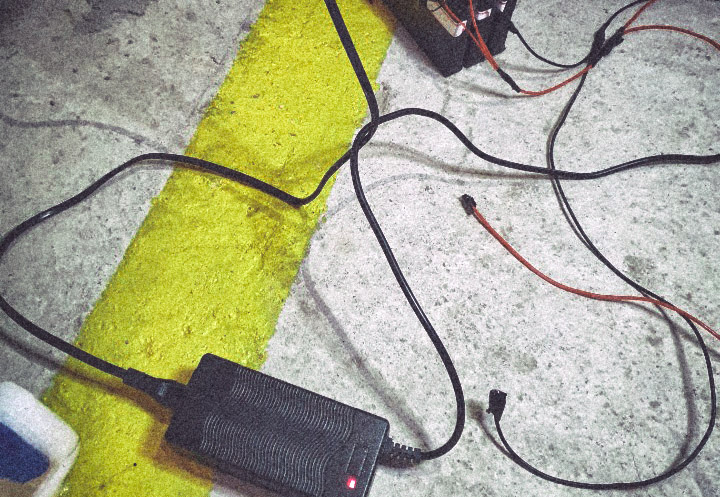
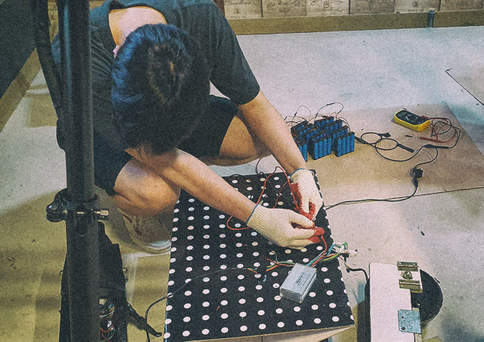
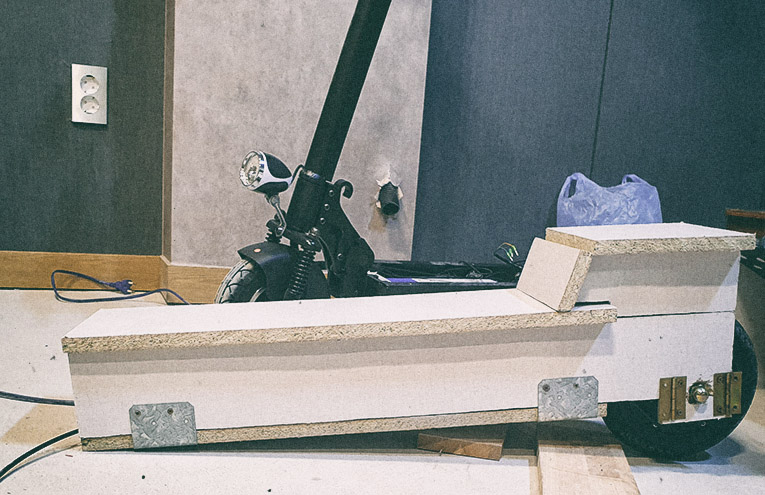

먼저, Mechnical Team은 지난번에 제작한 나무 패널을 조립하여
모터휠(뒷바퀴)을 바디에 장착했다. 이 과정에서 어려웠던 점이 하나
있었는데, 바퀴를 고정하기 위해 축을 나무와 나무로 덮어주려 할 때 PB
특성상 나사를 박으면 쉽게 부서지는 경우가 발생했다. 그래서 다른
방법을 생각해 내야 했고, 나무에 직접 나사를 박는 대신 철을 덧대기로
했다. 아래 사진과 같이 철을 대고 나사를 박으니 튼튼하게 조립할 수
있었다. 물론, 이것은 PB의 특성 때문에 불가피한 부분이었고 최종
모델의 경우에는 합금을 사용할 것이기 때문에 아래 사진과 같이
연결하지는 않을 것이다.


같은 시간, Electric Team은 27일에 완성한 배터리팩에 충전단자를
연결하는 작업을 했다. 이 과정에서 스파크가 발생하여 멀티 미터의 접지
단자가 타버리는 경미한 사고가 있었지만, 덕분에 전기에 대해 다시 한번
배우고, 안전에 더욱 신경을 기울일 수 있게 되었다. 이러한 시행착오를
겪으며 충전단자를 성공적으로 연결하였고, 아래 사진과 같이 불이
들어오는 것을 보아 충전이 가능함을 확인하였다.


2019-08-07 Wed
전원 스위치 구현 + 구동 테스트 [3]
이제 배터리팩과 모터를 연결하여 구동이 되는지 확인하기로 했다.
필요한 부품은 전원 스위치와 스로틀이었다. 분석 결과, 전원 스위치는
자체적으로 제작할 수 있다고 판단하였으며, 스로틀은 회로를 구현하기가
까다로워 잠시 보류하고 기존에 존재하는 스로틀 완제품을 사용하기로
하였다. 그러나 배터리팩에 전원 스위치를 연결하기 위해 이에 연결된
전선 피복을 벗기던 도중, 전선끼리 맞닿아 스파크가 발생했고 배터리팩
일부가 손상되었다. 배터리팩을 분해하고 검사한 결과 각 줄당 2개씩, 총
6개의 셀이 손상된 것으로 판명되었다. 따라서, 임시방편으로 기존에
보유하고 있던 전동 킥보드의 배터리를 이용하여 모터를 구동시켜 보기로
했다. 하지만, 출력이 500W인 모터를 움직이기에는 배터리팩의 출력이
너무나도 부족하였고, 우리의 모터와 컨트롤러를 연결했을 때 바퀴가
거꾸로 회전하는 문제가 발생했다. 일단, 우리의 배터리팩 또한 이
배터리팩을 벤치마킹하여 제작한 것이었기 때문에 출력 개선을 위해
배터리를 추가 구매하기로 했고, 회전 방향의 문제를 다음 모임에
해결하기로 했다. 긍정적인 부분이 있었다면, 브레이크 케이블은
연결했을 때 정상적으로 작동하였다.
2019-08-10 Sat
외형 제작 [3] + 구동 테스트 [2]
최악의 경우를 생각해서 배터리 셀을 12개 더 구매하였고, 혹시나 하는
생각에 고장 난것으로 판단한 배터리를 다시 충전해서 테스트해본 결과
고장이 아닌 것으로 나타났다. 그러나 여전히 출력을 개선할 필요가
있었기 때문에 추가적으로 18개의 배터리 셀을 구매하기로 하였다.
그래서 현재 배터리팩을 구성하는 배터리 셀의 개수는 총 60개가 되었다.
또한, 전자 브레이크를 뒷바퀴 커버를 발로 미는 방식으로 구현하기로
함에 따라, 이에 맞는 뒷바퀴 커버를 제작하였다. 그리고 잠시 커버를
탈착하고 회전 방향 문제를 해결하기로 했다. 다양한 배선 작업을 통해
확인한 결과 컨트롤러와 모터 사이에 5핀 커넥터가 존재했는데, 이를
연결하면 거꾸로 회전하는 것임이 밝혀졌다. 이로써 구동 테스트는
성공적으로 완료되었다.


2019-08-13 Tue
전자 브레이크 구현
전자 브레이크를 기계식 브레이크와 분리하여 뒷바퀴 커버에 구현하려
했으나, 다시 한번 회의를 거친 결과 효율성이 떨어진다고 판단하였다.
그래서 전자 브레이크와 기계식 브레이크를 합쳐서 핸들에 구현하기로
했고, 스로틀을 발판에 구현하는 아이디어에 대해 논의했다. 이후 현재
가진 부품으로 전자 브레이크를 구현할 수 있는지 실험해 보았으나,
부품이 부족하여 구현할 수 없었다. 그리고 다음 두 번의 모임은
프로젝트의 현 상황을 진단하고 향후 진행 방향에 대해 논의하는 기회로
삼기로 했다.